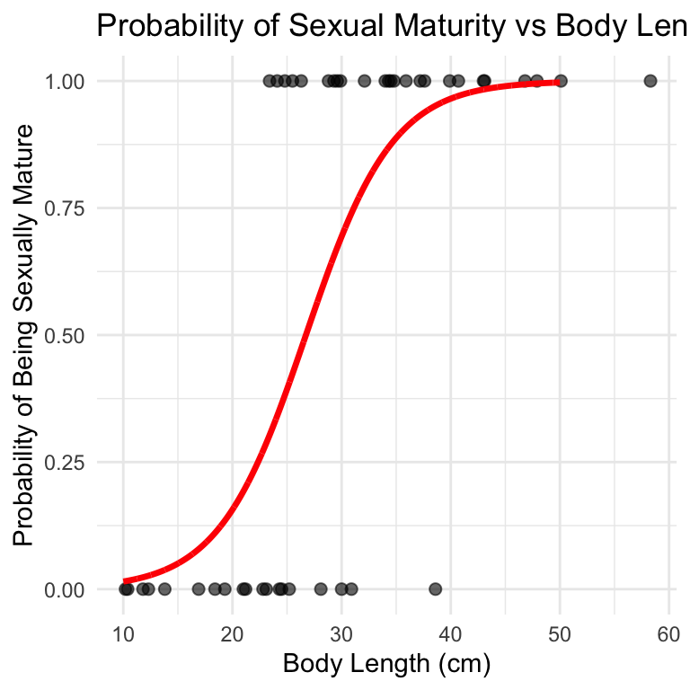
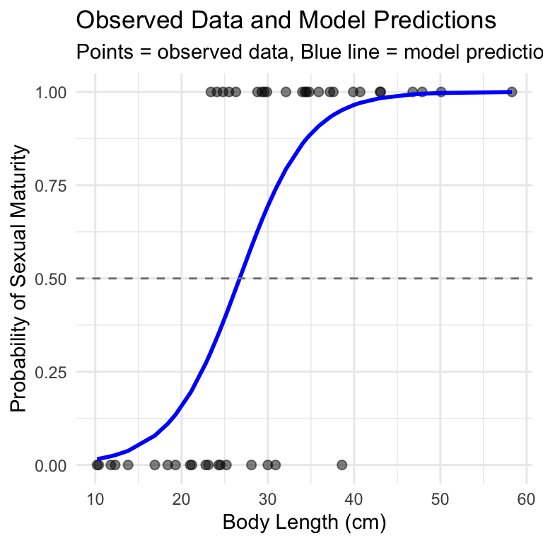

# Load the lizard dataset
lizards_df <- read.csv("data/lizards.csv") %>%
clean_names()
# First few rows
head(lizards_df)
## length mature
## 1 10.2 0
## 2 10.4 0
## 3 11.8 0
## 4 12.3 0
## 5 13.8 0
## 6 16.9 0Lecture: Review
Course review
Review
End-of-course review, worked through a full logistic regression example — fitting a model, interpreting log-odds and odds ratios, visualizing the probability curve, making predictions, and assessing model fit with pseudo-R².
Lecture 19: Introduction to Logistic Regression
What is Logistic Regression?
Logistic regression is used when: - The response variable is binary (yes/no, 1/0, present/absent) - Data follows a binomial distribution (not normal) - We want to model the probability of an outcome
Today’s Example: Lizard Sexual Maturity
We’ll explore the relationship between body length and sexual maturity in female lizards - Response variable: Sexual maturity (mature: 1 = yes, 0 = no) - Predictor variable: Body length in cm - Question: Can we predict the probability of sexual maturity from body size?
Key Difference from Linear Regression
- Linear regression: Models the actual values of Y
- Logistic regression: Models the probability of Y = 1
- Uses Generalized Linear Models (GLM) instead of General Linear Models
Step 1: Load and Explore the Data
Step 2: Initial Data Visualization
Creating a Boxplot
Let’s visualize how body length differs between sexually mature and immature lizards:
# Create boxplot showing length by maturity status
maturity_boxplot <- ggplot(lizards_df, aes(x = factor(mature), y = length)) +
geom_boxplot(fill = c("lightblue", "lightcoral")) +
labs(title = "Lizard Body Length by Sexual Maturity Status",
x = "Sexual Maturity (0 = Immature, 1 = Mature)",
y = "Body Length (cm)") +
theme_minimal()
maturity_boxplot
What do we see?
- There appears to be a relationship between size and sexual maturity
- Mature lizards tend to be longer than immature ones
- But there’s overlap - not a perfect separation
- This suggests logistic regression might be appropriate
Step 3: Fit the Logistic Regression Model
Using glm() for Logistic Regression
The glm() function is similar to lm() but requires specifying the distribution family:
# Fit logistic regression model
# family = binomial tells R we have binary data
logistic_model <- glm(mature ~ length,
data = lizards_df,
family = binomial)
# Get model summary
summary(logistic_model)
##
## Call:
## glm(formula = mature ~ length, family = binomial, data = lizards_df)
##
## Coefficients:
## Estimate Std. Error z value Pr(>|z|)
## (Intercept) -6.6899 2.1401 -3.126 0.00177 **
## length 0.2503 0.0775 3.229 0.00124 **
## ---
## Signif. codes: 0 '***' 0.001 '**' 0.01 '*' 0.05 '.' 0.1 ' ' 1
##
## (Dispersion parameter for binomial family taken to be 1)
##
## Null deviance: 60.176 on 43 degrees of freedom
## Residual deviance: 34.041 on 42 degrees of freedom
## AIC: 38.041
##
## Number of Fisher Scoring iterations: 6Interpreting the Model Output
Coefficients:
- Intercept (β₀): -5.5847 - The log-odds when length = 0
- Slope (β₁): 0.2503 - Change in log-odds for each 1 cm increase in length
P-values:
- Both coefficients are significant (p < 0.05)
- We reject the null hypothesis that β₁ = 0
- There IS a relationship between length and sexual maturity
Understanding the Slope:
The positive slope (0.2503) indicates: - Longer lizards are more likely to be sexually mature - For each 1 cm increase in length, the log-odds of maturity increase by 0.2503
Step 4: Convert Log-Odds to Odds
Making the Results More Interpretable
Log-odds are hard to interpret. Let’s convert to odds:
# Extract the slope coefficient
slope_coefficient <- coef(logistic_model)[2]
# Convert log-odds to odds ratio
odds_ratio <- exp(slope_coefficient)
odds_ratio
## length
## 1.284388
# Interpretation
# For every 1 cm increase in length, the odds of being sexually mature
# increase by a factor of 1.284 (or about 28.4%)Step 5: Create the Logistic Regression Plot
Visualizing the Probability Curve
# Create sequence of x-values for prediction
xvals <- seq(from = 10, to = 50, by = 0.01)
# Get predicted probabilities
yvals <- predict(logistic_model,
list(length = xvals),
type = "response")
# Create prediction dataframe for plotting
prediction_df <- data.frame(length = xvals,
probability = yvals)# Create the logistic regression plot
logistic_plot <- ggplot() +
# Add data points
geom_point(data = lizards_df,
aes(x = length, y = mature),
alpha = 0.6, size = 2) +
# Add logistic curve
geom_line(data = prediction_df,
aes(x = length, y = probability),
color = "red", size = 1.2) +
labs(title = "Probability of Sexual Maturity vs Body Length",
x = "Body Length (cm)",
y = "Probability of Being Sexually Mature") +
theme_minimal()
logistic_plot
What the S-curve tells us:
- The red line shows how probability changes with length
- Small lizards (<20 cm) have very low probability of being mature
- Large lizards (>40 cm) have very high probability of being mature
- The steepest change occurs around 25-30 cm
Step 6: Making Predictions
Using the Model for Prediction
Let’s predict the probability of sexual maturity for specific lizard sizes:
# Predict for a 20 cm lizard
prob_20cm <- predict(logistic_model,
list(length = 20),
type = "response")
prob_20cm
## 1
## 0.1565304
# Predict for a 30 cm lizard
prob_30cm <- predict(logistic_model,
list(length = 30),
type = "response")
prob_30cm
## 1
## 0.6939292
# Predict for a 40 cm lizard
prob_40cm <- predict(logistic_model,
list(length = 40),
type = "response")
prob_40cm
## 1
## 0.9651551Interpretation:
- A 20 cm lizard has about 14% probability of being sexually mature
- A 30 cm lizard has about 70% probability of being sexually mature
- A 40 cm lizard has about 96% probability of being sexually mature
Step 7: Model Fit Assessment
Calculating Pseudo-R2 Values
Unlike linear regression, logistic regression doesn’t have a traditional R². We use pseudo-R² instead:
# Calculate pseudo-R2 values using pscl package
pseudo_r2 <- pR2(logistic_model)
## fitting null model for pseudo-r2
pseudo_r2
## llh llhNull G2 McFadden r2ML r2CU
## -17.0204762 -30.0881077 26.1352630 0.4343122 0.4478763 0.6009400Interpreting Pseudo-R2 Values
The last three values are the pseudo-R² statistics:
- McFadden: Compares model to null model
- r2ML: Maximum likelihood based R²
- r2CU: Cragg-Uhler (Nagelkerke) R²
Values around 0.4-0.5 indicate moderate to good fit. Our model explains approximately 40-50% of the variation in sexual maturity status.
Step 8: Additional Diagnostics
Creating a More Detailed Summary Plot
# Create a plot showing observed vs predicted probabilities
lizards_df$predicted_prob <- predict(logistic_model, type = "response")
diagnostic_plot <- ggplot(lizards_df, aes(x = length)) +
# Add observed data as points
geom_point(aes(y = mature), alpha = 0.5, size = 2) +
# Add predicted probabilities
geom_line(aes(y = predicted_prob), color = "blue", size = 1) +
# Add 50% probability threshold
geom_hline(yintercept = 0.5, linetype = "dashed", color = "gray50") +
labs(title = "Observed Data and Model Predictions",
x = "Body Length (cm)",
y = "Probability of Sexual Maturity",
subtitle = "Points = observed data, Blue line = model predictions") +
theme_minimal()
diagnostic_plot
Summary: Key Takeaways
What We Learned:
- Logistic regression models probability of binary outcomes
- Uses glm() with
family = binomial - Coefficients represent changes in log-odds
- Convert to odds ratios for interpretation: exp(coefficient)
- Creates S-shaped probability curves
- Use pseudo-R² to assess model fit
Our Results:
- Significant positive relationship between body length and sexual maturity
- Each 1 cm increase in length increases odds of maturity by ~28%
- Model explains ~40-50% of variation in maturity status
- Can predict probability of maturity for any given length
When to Use Logistic Regression:
- Binary response variable (0/1, yes/no, success/failure)
- Want to predict probabilities
- Relationships that follow S-shaped curves
- When assumptions of linear regression are violated